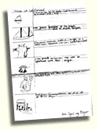
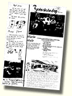
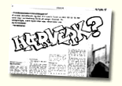

[Annen info fra Aftenpostens ungdoms- og skoletjeneste]
Nypvang skole fra Leinstrand i Sør-Trøndelag, Marlo skole fra Skjåk i Oppland, Reithaug skole fra Åsen i Nord-Trøndelag og Fagerborg videregående skolea i Oslo vant konkurransen om de beste skoleavissidene i 1995.
Nypvang, Marlo, Reithaug og Fagerborg vant
"Årets skoleavisside 1995"
Konkurransen ble arrangert for 8. gang og vel 130 sider deltok, mot 140 i 1994. Nyhetsredaktør Kåre Østlie, Hamar Arbeiderblad, redigerer Marianne Moseng, Dagbladet og avdelingsleder for Avis i Skolen, Jan Vincens Steen satt i juryen. Steen opplyser at sidene varierte veldig i format og kvalitet, og at juryens arbeid var vanskelig. - Allikevel pekte vinnerne seg klart ut i finaleomgangen.
I gruppen for 1.-4. klasse var det få bidrag, men juryen fant det riktig å peke ut en vinner etter to år uten premiering i klassen.

Vinnersiden fra Nypvang skole, laget av en 3. klasse ble rost for den klare og gode kombinasjon av bilde og tekst.
I gruppen 4.-6. klasse var det tre finalister, Byrkenes skule, Hernes skole og vinneren Marlo skule.
Marlos skoleavis trekkes frem som et eksempel på hvor enkelt og bra virkelig lokale nyhetssaker kan presenteres. 
Moelv ungdomsskole, Riksfjord skole og Reithaug skole var de tre beste i ungdomsskoleklassen.
Reithaug har vært konstruktivt kritiske i formen og har variert sjangerbruken. Siden har helhetlig preg ifølge juryen.
Verdal videregående skole, Manglerud videregående skole og Fagerborg pekte seg ut blant bidragene fra videregående skoler.
Fagerborg videregående skole gikk til topps for femte gang og juryen uttaler bl.a.: "En artikkel om ungdom, skrevet av ungdom". Elevenes bruk av elementer for å forsterke temaet (grafitti) fremheves også. 
Vinnerskolene får diplom og kamera overrakt i god tid før vårsemesteret starter opp.
- Vi håper at årets skoleavisside bidrar til en oppgradering av skoleavis som valgfag, og en generell kvalitetsbedring av produktene! - sier Jan Vincens Steen.
- Konkurransen sannsynligvis også blir arrangert i 1996.
{kind=link}
{kind=link}
{kind=link}
{kind=link}